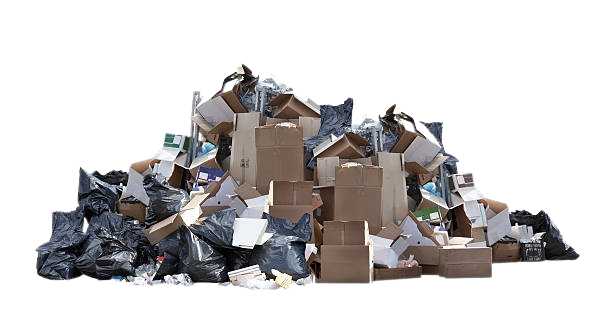

Behalten Sie Ihre ungespielten Spiele, ungelesenen Bücher und nicht gesehenen Filme im Blick. 
Wozu diese Webanwendung?
Um eine Übersicht zu schaffen über eine ganze Liste ungespielter oder ungelesener Medien.
Funktionen
- Eintrag von Items
- Filtern und Durchsuchen Ihrer Listen